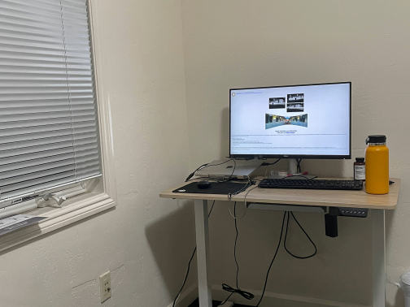
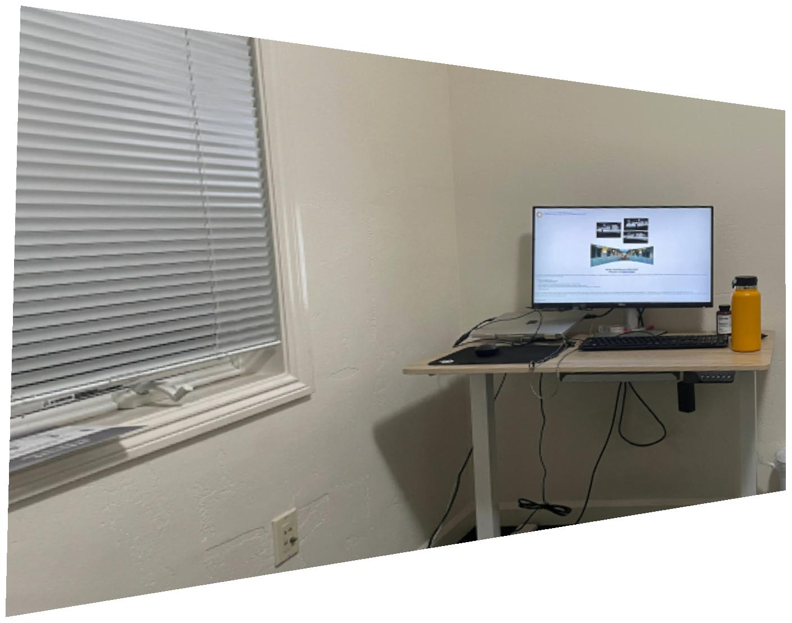
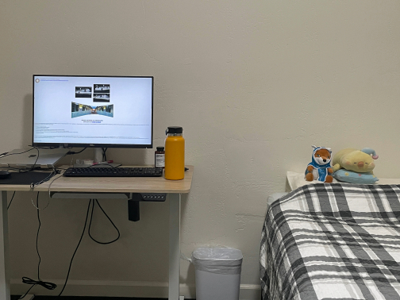
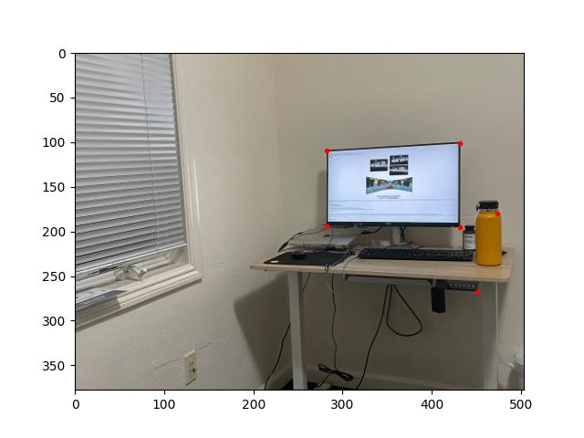
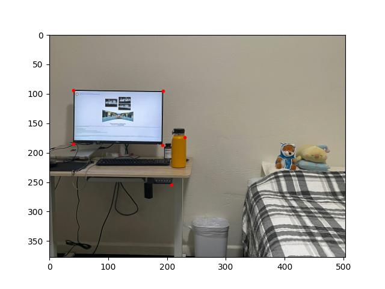
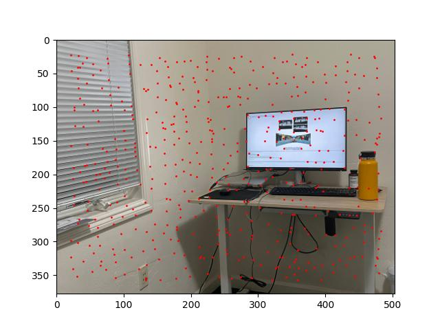
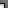
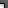
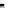
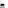

Given two sets of four points, we can compute a "homography" that captures the projective transformation from one set of points to the other. Additional pairs of points let us compute a least-squares homography that is less sensitive to errors in the placement of individual points.
To obtain a "rectification" of an image, we label four points in the image. Then we compute the homography between the labelled points and a rectangle of our choice. Applying the homography to the image produces a warped version of the image in which the region defined by the labelled points appears rectangular.
 [A photo of my desk (room_left.jpg); with labels; warped so that the computer monitor appears rectangular.]
[A photo of the door to my house (door.jpg); with labels; warped so that the door appears rectangular.]
For the photo of my desk, I labelled the four corners of the computer monitor and mapped these points to a 16:9 rectangle (the monitor has a 16:9 aspect ratio). For the photo of the door, I labelled the four corners of the doorframe and mapped these points to a 1:2 rectangle.
Rather than mapping the labelled points of an image to a rectangle, we can map the labelled points of an image to corresponding points in a second image (that was taken from approximately the same point in space). Applying the resulting homography to the first image warps it to match the perspective of the second image, and combining the warped first image with the original second image produces a seamless "mosaic."
A homography defined by hand-picked pairs of corresponding points may be imprecise. To improve the homography, we perform gradient descent over the eight parameters of the homography. (For a particular homography, our gradient-descent loss function computes the per-pixel difference between the warped first image and the original second image.)
  [Two photos room_left.jpg and room_right.jpg; with matching labels.]
Once a precise homography is obtained, the resulting warped first image and original second image must be combined in a way that prevents visual artifacts. We divide the combined image into three regions: one in which the warped first image is the sole contributor, one in which the original second image is the sole contributor, and one in which both images contribute. For each pixel in the region of overlap, we calculate the Manhattan distance between the pixel and each of the exclusive regions. These distances decide the weights for our weighted-average computation of the RGB values of the pixel in the combined image.
[Two photos room_left.jpg and room_right.jpg; a mosaic of the two photos.]
[Two photos couch_left.jpg and couch_right.jpg; a mosaic of the two photos.]
[Two photos plushies_left.jpg and plushies_right.jpg; a mosaic of the two photos.]
We can automate our code for mosaicing by writing code that automatically determines the corresponding points of a homography. Our approach is a simplified version of the approach described in ""Multi-Image Matching using Multi-Scale Oriented Patches" (Brown et al.).
The project spec provides us with a get_harris_corners function. This function takes a grayscale image as input and outputs all integer-coordinate points that are local maximums for "corner strength". (A point has high corner strength if the derivatives of the image w.r.t. x and w.r.t. y are both large at that point.)
[The results of calling get_harris_corners on room_left.jpg and room_right.jpg.]
Calling get_harris_corners gives us thousands of points because the threshold for any given point being a local maximum is very low. Some points, such as the points on the corners of the computer monitor, make sense. But most of them do not correspond to visible corners. We need to eliminate most of the returned points and keep only the best ones.
We want to keep the returned points with the greatest corner strength. However, simply keeping the greatest-strength points is not good enough, as explained by Brown et al. This naive strategy tends to keep points that are closely clustered. Instead, we want to keep points that are roughly evenly-distributed so that two overlapping images are likely to have many corresponding points in their overlap.
The Adaptive Non-Maximal Suppression (ANMS) strategy calculates the "suppression radius" of each returned point. The point with the highest corner strength has an infinite suppression radius; for each other point p, the suppression radius of p is the minimum distance to a point with "significantly greater" corner strength (in our case, at least 11.1% more). ANMS keeps the 500 points with the greatest suppression radii.
(It turns out that calculating suppression radii is the most computationally expensive part of automated mosaicing. I found it helpful to ignore all but the 5000 points with greatest corner strength while calculating suppression radii and deciding which points to keep.)
[The results of applying ANMS to the previous images.]
In the post-ANMS examples above, we can see that the points on the corners of the computer monitor and other "sensible" points remain. But most of the arbitrary-looking points are gone. Furthermore, the remaining points are distributed fairly evenly.
Once we have identified points that correspond to meaningful corners in an image, we obtain the "feature descriptor" of each point. The feature descriptor for point p samples the 40x40 pixels surrounding p and compresses them into an 8x8 grayscale image.
With the post-ANMS points and feature descriptors for two overlapping images, we can now perform "feature matching" to find corresponding points between the two images. We measure the error between two feature descriptors as the squared norm of their difference, which is easily calculated in NumPy.
For each post-ANMS point p in image im1, we compute the nearest neighbor of p in image im2; that is, the point q1 in im2 whose feature descriptor has the least error with the feature descriptor of p. We also compute the second-nearest neighbor q2 of p.
Let e1 be the error between the f.d.s of p and q1; let e2 be the error between the f.d.s of p and q2. From "Distinctive image features from scale-invariant keypoints" (Lowe), we know that the ratio e1 / e2 is closely linked to whether p and q1 are corresponding points. In particular, Brown et al. tell us that p and q1 are overwhelmingly likely to be corresponding points when e1 / e2 < 0.4. However, our RANSAC method for computing a least-squares homography works even if we incorrectly identify many pairs of points as corresponding, so we choose a more generous threshold of e1 / e2 < 0.7.
We conclude feature matching by identifying all pairs of points (p, q) that are "symmetrically" satisfactory; that is, p and q are each other's nearest neighbors and both points satisfy the e1 / e2 < 0.7 threshold.
[All pairs of points identified by matching the f.d.s of room_left.jpg and room_right.jpg.]
[The f.d.s for the pair of points at the bottom-left corner of the computer monitor, labelled "2".]
 [The f.d.s for the pair of points at the top-right corner of the computer monitor, labelled "3".]
 [The f.d.s for the pair of points at the top-right corner of the yellow water bottle, labelled "32".]
The final step in automating our mosaicing process is to compute a least-squares homography from our pairs of corresponding points. Not all of our pairs are guaranteed to be correct, so we cannot simply use all of them in the homograpy computation.
Our strategy is to repeatedly and randomly select four pairs of corresponding points. For each selection, we compute the homography H implied by the four pairs. Then we count the "inliers" of H; that is, we count how many of our pairs are correctly mapped by H. This computation is very quick for an individual selection, so we can iterate over thousands of random selections.
After inspecting a sufficient number of selections, we choose the selection which has the maximum "inliers" count. The homography H for this selection is likely very close to the correct homography. We refine H by greedily introducing additional pairs of corresponding points to its least-squares computation until we can no longer improve the "inliers" count for our current H.
Once we have settled on a final H, we proceed with warping and overlapping. Unlike manual mosaicing, we do not need to improve H with gradient descent.
The results of manual (left) and automated (right) mosaicing.
Two improvements for automated mosaicing.
For two overlapping images with drastically different resolutions, the feature-matching process described above will not work well because feature descriptors for the larger image with appear "zoomed in" compared to feature descriptors for the smaller image. We solve this problem by sampling Harris corners from a Gaussian pyramid, as mentioned by Brown et al.
We create a Gaussian pyramid for each input image by repeatedly smoothing and downsampling the image. Lower-resolution levels in the pyramid let us capture more pixels from the original image when we compute feature descriptors. The pyramid should not be too deep, however, because the sub-pixel errors inherent to get_harris_corners grow enormously when we convert from the coordinates of a low-resolution level to the coordinates of the original level.
In our code for obtaining the initial points of interest, we call get_harris_corners on each level of a pyramid. Then we combine the results of these calls (while recording the "origin level" of each point) and proceed normally. The origin level of a point matters primarily for computing its feature descriptor.
[Harris corners for the zeroth and first levels of the Gaussian pyramid derived from a doubled-resolution room_left.jpg.]
[The automated mosaic between room_left.jpg and room_right.jpg; the automated mosaic between a doubled-resolution room_left.jpg and the original room_right.jpg.]
We can see that the automated mosaic becomes slightly worse when we introduce a doubled-resolution room_left.jpg. This makes sense because our reliance on the first level of the Gaussian pyramid effectively doubles the errors of get_harris_corners.
We can use feature matching not just to find corresponding points between two overlapping images, but also to determine whether two images overlap at all. We define the constant value min_pairs = 15. If feature matching between images im1 and im2 yields less than min_pairs pairs of corresponding points, then it is very likely that im1 and im2 do not overlap.
Given an unordered set of images, we remove the two images for which feature matching yields the most corresponding points across all pairs of images. Then we combine these images via automated mosaicing and append the result to the set. We repeat this process until no pair of images in the set has at least min_pairs pairs of corresponding points.
[The result of processing a shuffled list containing the two room photos, the two couch photos, the two plushie photos, and the door photo.]
In the results above, we can see that door.jpg, which does not overlap with any of the other input images, is unchanged.